Fused
A fused codec runs the chain in one pass. Separate nodes write each stage's full output to memory before the next stage reads it. A fused codec keeps samples in registers between stages, reading the input once and writing the output once. Both produce the same decoded data.
Fusion helps most when cheap steps such as planar, zigzag and pfor spend more time moving data than computing. Follow one 1024 × 1024 uint16 tile of 2 MiB through separate and fused planar>zigzag>pfor.

A recipe uses a fused codec when someone has implemented that exact chain. The ones that exist today are listed below.
11planar_zigzag
planar_zigzag computes the planar residual and maps it to unsigned with Zigzag in the same pass, so a small negative residual stays a small number.

Any terminal can follow planar_zigzag, as in planar>zigzag>entropy. For pfor and lanes, the fused versions below go further.
| ctid | 0x72D70F |
|---|---|
| header | uint32 · row width in samples + uint32 · plane count, when above one |
| widths | 8 · 16 · 32 · 64-bit integers |
| decode | inverse Zigzag, then planar reconstruction |
| next | a packer or entropy stage, also folded into planar_zigzag_pfor |
// encode
r = s - (W + N - NW);
z = (r << 1) ^ (r >> (bits - 1)); // zigzag, small signed to small unsigned
// decode
r = (z >> 1) ^ -(z & 1);
o = r + W + N - NW; // a prefix sum per row, as planargeozl.lossless.PlanarZigzag(width, planes=1)12planar_zigzag_pfor
planar_zigzag_pfor predicts, maps and packs 256 values at a time, so the Zigzag stream of the tile never exists. Its payload matches planar_zigzag followed by pfor.

planar_zigzag_pfor implements planar>zigzag>pfor for small residuals that do not repeat. How PFOR works covers the blocks.
| ctid | 0x72D710 |
|---|---|
| header | uint64 · element count + uint8 · element width + uint32 · row width + uint32 · plane count |
| values | 8 · 16 · 32 · 64-bit numeric elements |
| geometry | width = columns planes = contiguous independent rasters |
// decode, one block of 256 values at a time
pfor_unpack(block, z); // into a 2 KiB scratch buffer
for (i = 0; i < 256; i++) {
r = (z[i] >> 1) ^ -(z[i] & 1);
o = r + W + N - NW; // straight into the output
}geozl.lossless.PlanarZigzagPfor(width, planes=1)13planar_zigzag_lanes
planar_zigzag_lanes runs planar and Zigzag, then codes each residual byte lane on its own with PivCo Huffman, or with byte PFOR when that is smaller.

Recipes spell it planar>zigzag>lanes for every sample width. It tends to beat planar_zigzag_pfor when residual bytes are skewed rather than merely small. How PivCo works explains the format.
| ctid | 0x72D712 |
|---|---|
| header | uint64 · element count + uint8 · element width + uint32 · row width + uint32 · plane count + uint32 · PivCo block size + per lane uint8 mode, uint16 weights, uint32 bitstream |
| values | 8 · 16 · 32 · 64-bit numeric elements |
| lanes | one per residual byte, PivCo Huffman, or byte PFOR where that is smaller |
| geometry | width = columns planes = contiguous independent rasters |
// decode, one lane per byte of the sample
for (k = 0; k < sizeof(T); k++) decode_lane(k, lane[k]); // PivCo or PFOR
for (i = 0; i < n; i++) {
z = 0;
for (k = 0; k < sizeof(T); k++) z |= (T)lane[k][i] << (8 * k);
r = (z >> 1) ^ -(z & 1);
o = r + W + N - NW;
}geozl.graph(tile, "planar>zigzag>lanes")14med_zigzag
med_zigzag writes the MED residual mapped by Zigzag in one pass, identical to med followed by Zigzag. Every med>zigzag recipe uses it.
It has no fused PFOR or PivCo version and decodes only on the CPU. The usual recipe is med>zigzag>transpose>entropy.
| ctid | 0x72D711 |
|---|---|
| header | uint32 · row width in samples + uint32 · plane count, when above one |
| widths | 8 · 16 · 32 · 64-bit integers |
| decode | inverse Zigzag folded into the MED reconstruction |
| next | an entropy stage, usually after a byte transpose |
// encode
r = s - med(W, N, NW);
z = (r << 1) ^ (r >> (bits - 1));
// decode, one sample at a time along each row
r = (z >> 1) ^ -(z & 1);
o = r + med(W, N, NW);geozl.lossless.MedZigzag(width, planes=1)